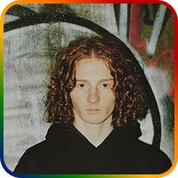
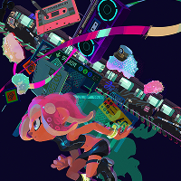
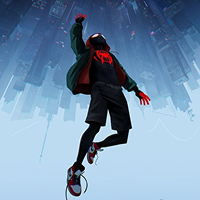
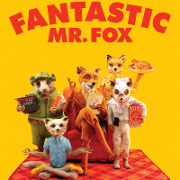
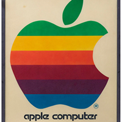

Je m'appelle Thadée, je suis un étudiant à l'Université Sorbonne Paris Nord en deuxième année de BUT Métiers du Multimédia et d'Internet. Je recherche un stage dans le milieu du game design, du graphic design, de l'audiovisuel, ou de la production musicale.
Parcours
2026 :
DUT Métiers du Multimédia et d'Internet - Création Numérique (En cours)
Avril 2026:
Stage (2 à 4 mois)
2024 :
Bac Général - AMC, HGGSP, Anglais Euro : Mention Bien - Lycée Claude Monet
Inspirations

Splatoon - Nintendo
Mon inspiration principale en terme de jeux vidéos. Un chaos coloré, un gameplay innovant et une musique excentrique qui pioche dans tous les styles.

Discovery - Daft Punk
Mon album préféré, par mon groupe préféré. Un pilier de l'électro, et la cover est à la fois simple et mythique.

Spider-Man : Into the Spider-Verse
La narration, l'animation, la réalisation, la musique, le doublage : tout dans ce film est poussé au maximum des possibilités.

Fantastic Mr. Fox
Une sorte de peinture animée. Ce genre d'oeuvre me donne envie de trouver mon style irréplicable.
